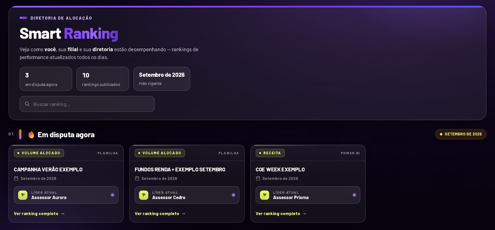
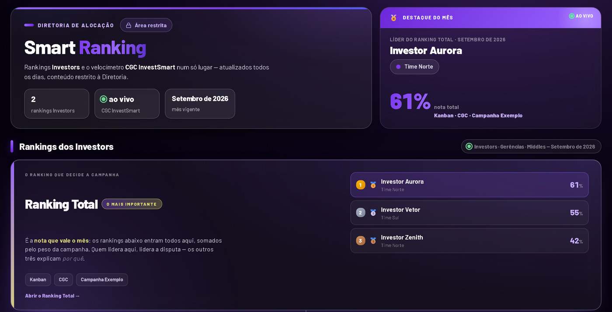
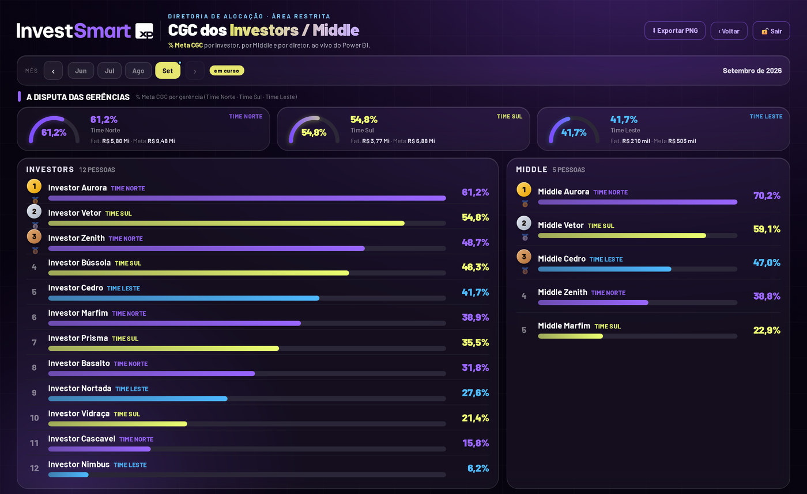
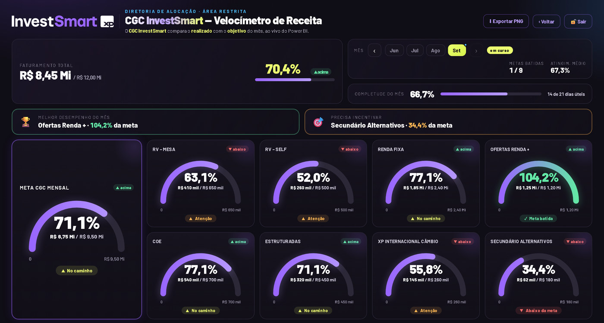

em produção · InvestSmart XP
Smart RankingPlataforma de BI e rankings da diretoria.
- Problema
- Rankings e gerenciais de campanha eram montados à mão em Excel e Power BI e circulavam como print: cerca de 10 envios por semana.
- O que fiz
- Idealizei e desenvolvi um portal com rankings de campanhas no formato de TV, velocímetro de receita, ranking Kanban e áreas restritas para Investors e Diretoria. A máquina local calcula e cifra; a nuvem só serve. Nenhuma credencial de banco ou de BI fica no servidor.
- Resultado
-
Usado todo dia pela mesa de alocação.
15 mspainel da diretoria (antes 10 s)66 MBpico de memória (antes 192 MB)20 h por mêsde trabalho manual eliminadas99 testesautomatizados (pytest)
detalhes técnicos
- Cofre com Fernet (AES-128 com HMAC) e compressão zlib antes de cifrar: caiu de 10,4 MB para 1,4 MB.
- pandas carregado só quando é usado.
- Régua de risco de saída de assessores: pontuação por regras a partir do DW, com alertas no Centro do Investor.
- Estudos publicados como imagem.
sistema interno · repositório privado


dados fictícios





telas com dados fictícios · clique para ampliar